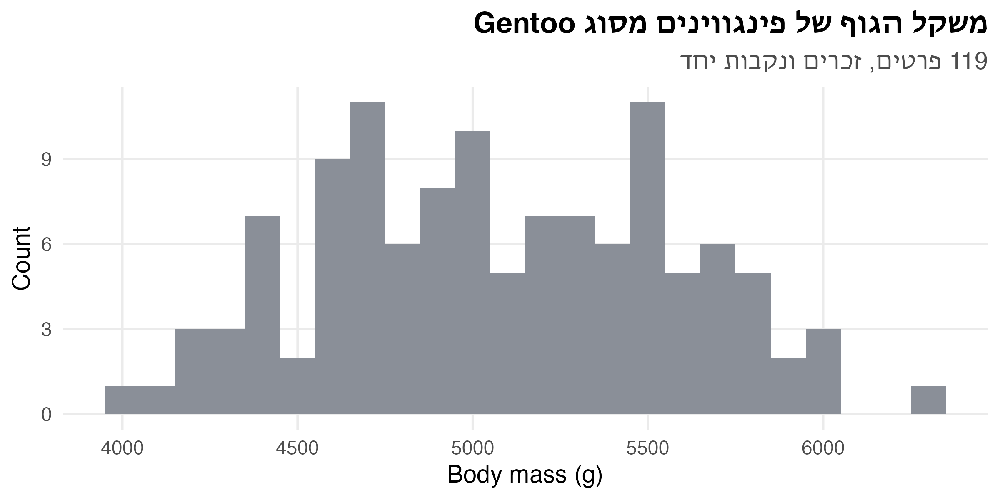
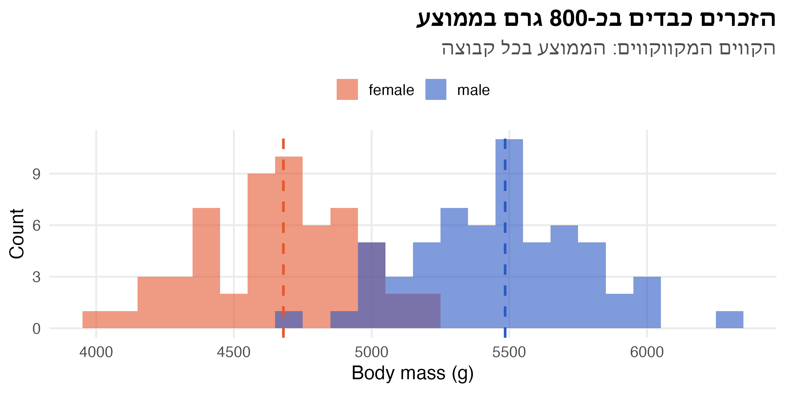
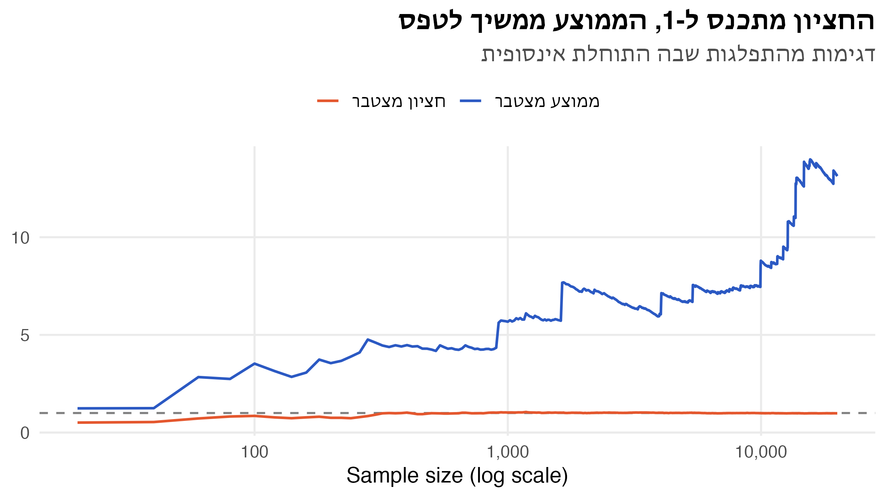
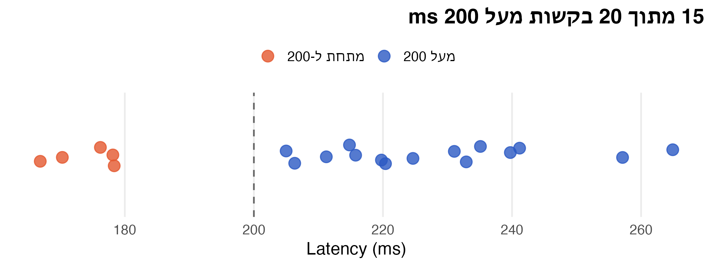
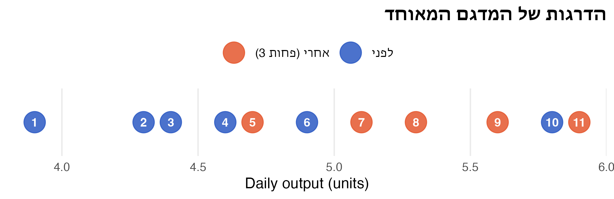
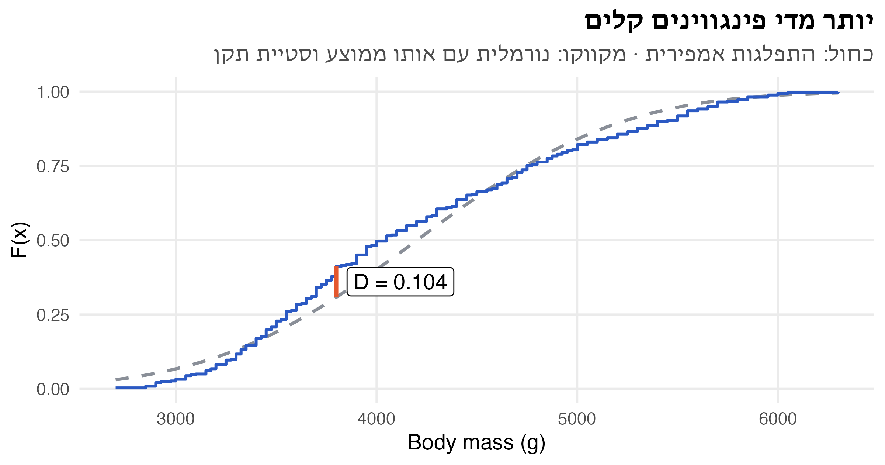
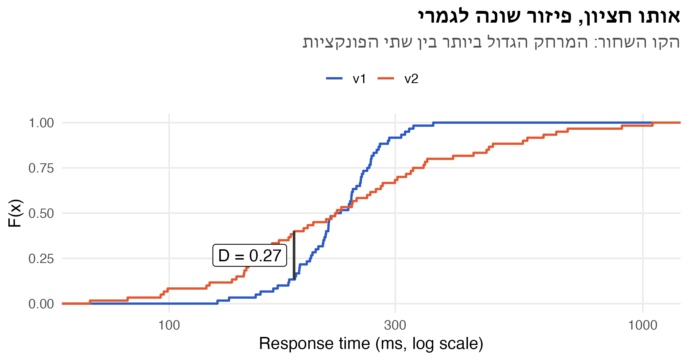
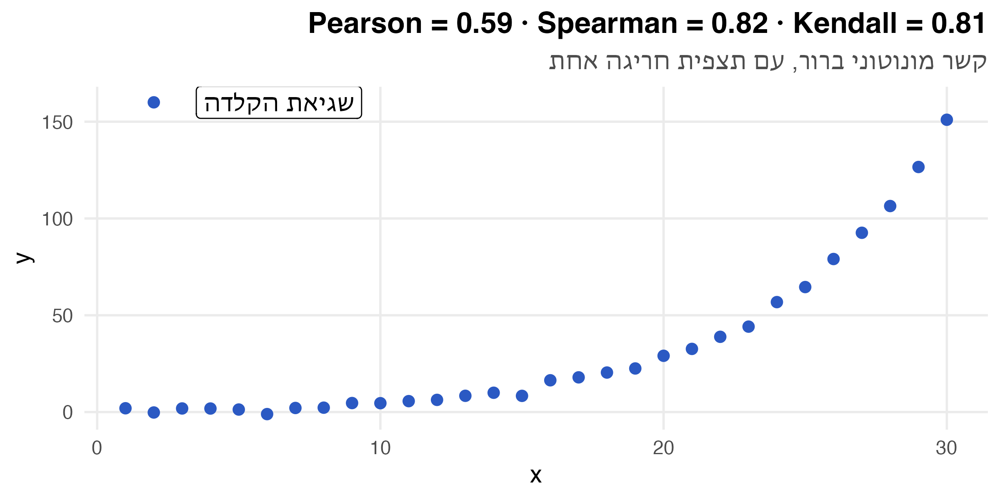

קוד
gentoo <- penguins |> filter(species == "Gentoo", !is.na(sex))
gentoo |> summarise(n = n(), mean = mean(body_mass), sd = sd(body_mass), .by = sex) sex n mean sd
1 female 58 4680 281.6
2 male 61 5485 313.2ניתוח נתונים סטטיסטי · הרצאה 1
gentoo <- penguins |> filter(species == "Gentoo", !is.na(sex))
gentoo |> summarise(n = n(), mean = mean(body_mass), sd = sd(body_mass), .by = sex) sex n mean sd
1 female 58 4680 281.6
2 male 61 5485 313.2ggplot(gentoo, aes(body_mass)) +
geom_histogram(binwidth = 100, fill = nanas_pal[["grey"]]) +
labs(title = "משקל הגוף של פינגווינים מסוג Gentoo",
subtitle = "119 פרטים, זכרים ונקבות יחד",
x = "Body mass (g)", y = "Count")
ההתפלגות רחבה, ונראה שיש בה שתי “גבעות”. זה רמז שמסתתר כאן משתנה נוסף.
sex_means <- gentoo |> summarise(mean = mean(body_mass), .by = sex)
ggplot(gentoo, aes(body_mass, fill = sex)) +
geom_histogram(binwidth = 100, alpha = 0.6, position = "identity") +
geom_vline(aes(xintercept = mean, colour = sex), data = sex_means,
linetype = "dashed", linewidth = 0.9, show.legend = FALSE) +
scale_fill_manual(values = c(female = nanas_pal[["accent"]], male = nanas_pal[["primary"]])) +
scale_colour_manual(values = c(female = nanas_pal[["accent"]], male = nanas_pal[["primary"]])) +
labs(title = "הזכרים כבדים בכ-800 גרם בממוצע",
subtitle = "הקווים המקווקווים: הממוצע בכל קבוצה",
x = "Body mass (g)", y = "Count", fill = NULL)
שתי ה”גבעות” הן שתי הקבוצות. ההבדל נראה גדול, אבל ההיסטוגרמות חופפות בחלקן. השאלה הסטטיסטית היא האם הבדל כזה יכול לנבוע ממקריות הדגימה בלבד.
\[ H_0: \mu_F = \mu_M \qquad H_1: \mu_F \neq \mu_M \]
\[ t = \frac{\bar{x}_F - \bar{x}_M}{\sqrt{\dfrac{s_F^2}{n_F} + \dfrac{s_M^2}{n_M}}} = \frac{4679.7 - 5484.8}{\sqrt{\dfrac{281.6^2}{58} + \dfrac{313.2^2}{61}}} = \frac{-805.1}{54.5} \approx -14.76 \]
t.test(body_mass ~ sex, data = gentoo) |>
print(digits = 6) # a little more precision than the course default
Welch Two Sample t-test
data: body_mass by sex
t = -14.76, df = 116.6, p-value <2e-16
alternative hypothesis: true difference in means between group female and group male is not equal to 0
95 percent confidence interval:
-913.113 -697.076
sample estimates:
mean in group female mean in group male
4679.74 5484.84 t = -14.76: ההפרש בין הממוצעים הוא כ-15 שגיאות תקן. הסימן שלילי כי R מחסר זכרים מנקבותdf = 116.6: Welch לא מניח שוויון שונויות, ולכן דרגות החופש לא שלמותp-value < 2e-16: אם \(H_0\) נכונה, הסיכוי לראות הפרש קיצוני כזה כמעט אפס. דוחים את \(H_0\)להזכיר: p-value איננו ההסתברות ש-H0 נכונה. זו ההסתברות לנתונים קיצוניים כאלה או יותר, בהינתן ש-H0 נכונה.
כאן ההנחות סבירות: ההיסטוגרמות בכל קבוצה נראות פעמוניות, ויש כ-60 פרטים בכל קבוצה. בשאר ההרצאה נשאל מה עושים כשההנחה על ההתפלגות לא מתקיימת, למשל כשיש ערכים קיצוניים או כשהמדגם קטן.
בפועל, נתונים “לא נורמליים” הם הכלל ולא החריג. זמני תגובה של מערכות, הכנסות, זמני המתנה בתור, ציוני שביעות רצון בסולם 1–5 ודירוגים בתחרות הם כולם מוטים, בדידים או מלאים בערכים חריגים. כשהמדגם קטן, משפט הגבול המרכזי לא מספיק כדי להציל אותנו.
דוגמה:
\[ f(x) = \dfrac{1}{(1+x)^2}, \quad x \in [0, \infty) \]
\[ \mu = \int_0^\infty \frac{x}{(1+x)^2}\,dx = \infty \]
\[ F(a) = 1 - \frac{1}{1+a} = 0.5 \;\Rightarrow\; \tilde{\mu} = 1 \]
# F(x) = 1 - 1/(1+x) => x = 1/(1-u) - 1
n <- 20000
heavy <- tibble(
i = 1:n,
x = 1 / (1 - runif(n)) - 1
) |>
mutate(
`ממוצע מצטבר` = cummean(x),
`חציון מצטבר` = map_dbl(i, \(k) median(x[seq_len(k)]))
) |>
filter(i %% 20 == 0) |>
pivot_longer(c(`ממוצע מצטבר`, `חציון מצטבר`), names_to = "stat")
ggplot(heavy, aes(i, value, colour = stat)) +
geom_hline(yintercept = 1, linetype = "dashed", colour = "grey50") +
geom_line(linewidth = 0.8) +
scale_x_log10(labels = label_comma()) +
scale_colour_manual(values = c(nanas_pal[["accent"]], nanas_pal[["primary"]])) +
labs(title = "החציון מתכנס ל-1, הממוצע ממשיך לטפס",
subtitle = "דגימות מהתפלגות שבה התוחלת אינסופית",
x = "Sample size (log scale)", y = NULL, colour = NULL)
הממוצע “קופץ” בכל פעם שמגיעה תצפית קיצונית, ולעולם לא מתייצב. החציון מתייצב מהר מאוד סביב 1. זו האינטואיציה לכל ההרצאה: סטטיסטיים שמבוססים על סדר ודירוג עמידים לערכים קיצוניים.
| השאלה | השיטה הפרמטרית | השיטה הא-פרמטרית |
|---|---|---|
| מרכז ההתפלגות | מבחן t / Z על התוחלת | מבחן הסימן (Sign test), מבחן הדירוגים המסומנים (Wilcoxon signed-rank) |
| שני מדגמים מזווגים | מבחן t מזווג | מבחן הסימן / Wilcoxon signed-rank על ההפרשים |
| שתי אוכלוסיות בלתי תלויות | מבחן t לשני מדגמים | מבחן סכום הדירוגים (Mann–Whitney) |
| התאמה להתפלגות נתונה | מבחן חי-בריבוע לטיב התאמה (Goodness-of-fit), מבחן Kolmogorov–Smirnov | |
| השוואה בין שתי התפלגויות | מבחן חי-בריבוע להומוגניות (Chi-square test of homogeneity), Kolmogorov–Smirnov לשני מדגמים | |
| מתאם בין שני משתנים | מתאם פירסון | Spearman’s ρ, Kendall’s τ |
\[ H_0: \tilde{\mu} = z \qquad H_1: \tilde{\mu} \neq z \]
\[ r^+ \sim \text{Binomial}(n, 0.5) \qquad P(r \le y) = 2\,P(r^+ \le y), \quad y < n/2 \]
הערך הקריטי \(R^*_\alpha\) הוא הערך הגדול ביותר שמקיים
\[ P(r \le R^*_\alpha) = 2 \sum_{y=0}^{R^*_\alpha} \binom{n}{y}\left(\frac{1}{2}\right)^n \le \alpha \]
כלל ההכרעה: אם \(r_0 \le R^*_\alpha\), דוחים את \(H_0\).
# Critical value of the sign test: largest r with 2 * P(Bin(n, 0.5) <= r) <= alpha
sign_critical <- function(n, alpha) {
max(which(2 * pbinom(0:n, n, 0.5) <= alpha)) - 1
}
sapply(c(`0.01` = 0.01, `0.05` = 0.05, `0.10` = 0.10), \(a) sign_critical(20, a))0.01 0.05 0.10
3 5 5 בבחינה הערך הקריטי נתון בטבלה. ב-R מחשבים אותו בשורה אחת, או מוותרים עליו ומסתכלים ישר על ה-p-value.
ה-SLA של שירות קובע שהחציון של זמן התגובה הוא 200 ms. נדגמו 20 בקשות:
api <- read_csv(file.path(data_dir, "api_latency.csv"), show_col_types = FALSE)
api |> mutate(diff = latency_ms - 200, sign = if_else(diff > 0, "+", "-")) |>
count(sign)# A tibble: 2 × 2
sign n
<chr> <int>
1 + 15
2 - 5ggplot(api, aes(latency_ms, 0, colour = latency_ms > 200)) +
geom_vline(xintercept = 200, linetype = "dashed", colour = "grey40") +
geom_point(size = 4, alpha = 0.8, position = position_jitter(height = 0.02, seed = 1)) +
scale_colour_manual(values = c(`FALSE` = nanas_pal[["accent"]], `TRUE` = nanas_pal[["primary"]]),
labels = c("מתחת ל-200", "מעל 200")) +
scale_y_continuous(NULL, breaks = NULL, limits = c(-0.1, 0.1)) +
labs(title = "15 מתוך 20 בקשות מעל 200 ms", x = "Latency (ms)", colour = NULL)
binom.test(sum(api$latency_ms > 200), n = nrow(api), p = 0.5)
Exact binomial test
data: sum(api$latency_ms > 200) and nrow(api)
number of successes = 15, number of trials = 20, p-value = 0.04
alternative hypothesis: true probability of success is not equal to 0.5
95 percent confidence interval:
0.5090 0.9134
sample estimates:
probability of success
0.75 איך קוראים את הפלט: number of successes = 15 הוא \(r^+\), ו-p-value = 0.04139 הוא \(2 \cdot P(r^+ \le 5)\). המסקנה תלויה ברמת המובהקות שנקבעה מראש: ב-1% אין מספיק ראיות, וב-5% יש.
מרצה טוען שחציון הציונים במועד ב׳ שלו הוא 80. ניגשו 11 סטודנטים. האם הטענה נכונה ב-\(\alpha = 0.1\)?
grades <- read_csv(file.path(data_dir, "exam_grades.csv"), show_col_types = FALSE)
grades$grade [1] 79 75 85 95 70 60 65 75 74 89 72binom.test(sum(grades$grade > 80), n = nrow(grades))$p.value # sign test[1] 0.2266t.test(grades$grade, mu = 80) |> print(digits = 6)
One Sample t-test
data: grades$grade
t = -1.204, df = 10, p-value = 0.256
alternative hypothesis: true mean is not equal to 80
95 percent confidence interval:
69.3750 83.1704
sample estimates:
mean of x
76.2727 כשהתצפיות מזווגות, מריצים את מבחן הסימן על ההפרשים \(d_i = x_i - y_i\), עם \(H_0: \tilde{\mu}_d = 0\).
דוגמה: צוות מוצר שוקל להחליף את Sonnet 5.5 ב-Opus 5.5, היקר יותר, למשימות תיוג. שני המודלים תייגו את אותן 11 משימות. האם Opus טועה פחות? בטבלה: שיעור השגיאות (%) בכל משימה. \(d_i\) = Opus פחות Sonnet. (נתונים מדומים)
llm_err <- read_csv(file.path(data_dir, "llm_labelling_errors.csv"), show_col_types = FALSE)
llm_err |>
mutate(sign = if_else(opus > sonnet, "+", "-")) |>
select(task = task_he, sonnet, opus, sign) |>
kable()| task | sonnet | opus | sign |
|---|---|---|---|
| ניתוב פניות שירות | 8.4 | 6.9 | - |
| סנטימנט בביקורות | 4.1 | 3.6 | - |
| זיהוי ספאם | 2.3 | 2.1 | - |
| זיהוי כוונה בצ׳אט | 11.2 | 9.0 | - |
| זיהוי תוכן פוגעני | 6.5 | 12.4 | + |
| שדות בחשבוניות | 9.8 | 8.1 | - |
| זיהוי שפה | 1.4 | 0.6 | - |
| תעדוף פניות רפואיות | 14.7 | 11.6 | - |
| סיווג סעיפים בחוזים | 13.0 | 10.4 | - |
| קטגוריית מוצר | 7.2 | 6.0 | - |
| זיהוי סרקזם | 15.3 | 22.1 | + |
למה מזווג? יש משימות קשות לכל מודל (סרקזם, תעדוף רפואי) ויש קלות (זיהוי שפה, ספאם). ההבדל בין המשימות גדול בהרבה מההבדל בין המודלים, ולכן משווים את שני המודלים בתוך כל משימה.
n_plus <- sum(llm_err$opus > llm_err$sonnet)
binom.test(n_plus, n = nrow(llm_err)) |> print(digits = 6)
Exact binomial test
data: n_plus and nrow(llm_err)
number of successes = 2, number of trials = 11, p-value = 0.0654
alternative hypothesis: true probability of success is not equal to 0.5
95 percent confidence interval:
0.0228312 0.5177559
sample estimates:
probability of success
0.181818 \[ E(R^+) = \frac{n(n+1)}{4} \qquad V(R^+) = \frac{n(n+1)(2n+1)}{24} \]
signed <- api |>
mutate(diff = latency_ms - 200,
rank = rank(abs(diff)),
signed_rank = sign(diff) * rank) |>
arrange(rank)
signed |> summarise(R_plus = sum(rank[diff > 0]),
R_minus = sum(rank[diff < 0]))# A tibble: 1 × 2
R_plus R_minus
<dbl> <dbl>
1 156. 53.5\[ R = \min(156.5,\; 53.5) = 53.5 < 60 = R^*_{0.1,\,20} \]
ולכן דוחים את \(H_0\) ב-\(\alpha = 0.1\).
signed |> select(request, diff, signed_rank) |> kable()| request | diff | signed_rank |
|---|---|---|
| 16 | 5 | 1.0 |
| 4 | 6 | 2.0 |
| 20 | 11 | 3.0 |
| 1 | 15 | 4.0 |
| 11 | 16 | 5.0 |
| 5 | 20 | 6.5 |
| 18 | 20 | 6.5 |
| 7 | -22 | -8.5 |
| 13 | -22 | -8.5 |
| 15 | -24 | -10.0 |
| 10 | 25 | 11.0 |
| 6 | -30 | -12.0 |
| 3 | 31 | 13.0 |
| 2 | -33 | -14.5 |
| 14 | 33 | 14.5 |
| 9 | 35 | 16.0 |
| 12 | 40 | 17.0 |
| 17 | 41 | 18.0 |
| 8 | 57 | 19.0 |
| 19 | 65 | 20.0 |
wilcox.test(api$latency_ms, mu = 200, exact = FALSE)
Wilcoxon signed rank test with continuity correction
data: api$latency_ms
V = 156, p-value = 0.06
alternative hypothesis: true location is not equal to 200V ב-R הוא \(R^+\) (156.5), לא \(\min(R^+, R^-)\)exact = FALSE: יש דרגות זהות, ולכן R משתמש בקירוב הנורמלינחזור ל-Sonnet מול Opus:
c(sign = binom.test(n_plus, nrow(llm_err))$p.value,
signed_rank = wilcox.test(llm_err$opus, llm_err$sonnet, paired = TRUE)$p.value) sign signed_rank
0.06543 0.32031 כדאי לשים לב ממה נובע הפער. Opus מנצח ב-9 משימות, אבל בהפרשים קטנים (0.2 עד 3.1 נקודות אחוז). בשתי המשימות שבהן Sonnet עדיף, זיהוי תוכן פוגעני וזיהוי סרקזם, הפערים גדולים: 5.9 ו-6.8 נקודות אחוז. ההפרשים רחוקים מסימטריה, ולכן כאן מבחן הסימן הוא המתאים. ובכל זאת, למוצר יש מסקנה מעשית: לפני שמחליפים מודל, בודקים איפה הוא נכשל, ולא רק כמה פעמים הוא ניצח. ממוצע ההפרשים כאן הוא 0.1 בלבד, ומבחן t מזווג לא היה מוצא שום הבדל. מבחן הסימן סופר רק כמה פעמים כל שיטה ניצחה, ומבחן הדירוגים המסומנים מתחשב גם בגודל הניצחון. השאלה איזה מבחן לבחור היא שאלה על ההנחות, ולא על איזה מבחן נותן את התשובה שרצינו. ואת ההחלטה מקבלים לפני שמסתכלים על התוצאה.
\[ E(T) = \frac{m(n+m+1)}{2} \qquad V(T) = \frac{mn(n+m+1)}{12} \]
דוחים את \(H_0\) אם \(\left|\frac{T - E(T)}{\sigma_T}\right| > Z_{1-\alpha/2}\)
נניח שאין תיקו. נסמן ב-\(R_1, \dots, R_m\) את הדרגות של תצפיות המדגם הקטן, כך ש-\(T = \sum_{i=1}^{m} R_i\).
תחת \(H_0\) כל התצפיות מגיעות מאותה התפלגות, ולכן כל סידור של \(N\) התצפיות סביר באותה מידה. מכאן שכל דרגה \(R_i\) מתפלגת אחיד על \(\{1, 2, \dots, N\}\):
\[ E(R_i) = \frac{1}{N}\sum_{k=1}^{N} k = \frac{N+1}{2} \]
התוחלת לינארית, ולכן (בלי צורך באי-תלות):
\[ E(T) = \sum_{i=1}^{m} E(R_i) = m \cdot \frac{N+1}{2} = \frac{m(n+m+1)}{2} \]
ובאותה דרך נקבל גם את השונות של דרגה בודדת:
\[ V(R_i) = E(R_i^2) - E(R_i)^2 = \frac{(N+1)(2N+1)}{6} - \frac{(N+1)^2}{4} = \frac{N^2 - 1}{12} \]
הדרגות תלויות: שתי תצפיות לא יכולות לקבל אותה דרגה. לכן צריך גם את השונות המשותפת:
\[ V(T) = \sum_{i=1}^{m} V(R_i) + \sum_{i \neq j} \text{Cov}(R_i, R_j) = m\,\sigma^2 + m(m-1)\,c \]
כאשר \(\sigma^2 = \frac{N^2-1}{12}\) ו-\(c = \text{Cov}(R_i, R_j)\) (זהה לכל זוג, מסימטריה).
הטריק: סכום כל \(N\) הדרגות הוא קבוע, \(1 + 2 + \dots + N\), ולכן השונות שלו אפס. אותו חישוב עם \(m = N\) נותן:
\[ 0 = N\sigma^2 + N(N-1)\,c \quad\Longrightarrow\quad c = -\frac{\sigma^2}{N-1} = -\frac{N+1}{12} \]
מציבים בחזרה:
\[ V(T) = m\sigma^2\left(1 - \frac{m-1}{N-1}\right) = m \cdot \frac{(N+1)(N-1)}{12} \cdot \frac{n}{N-1} = \frac{mn(n+m+1)}{12} \]
השונות המשותפת שלילית: אם תצפית אחת קיבלה דרגה גבוהה, נשארו פחות דרגות גבוהות לאחרות. זו בדיוק הסיבה ש-\(V(T)\) קטנה מ-\(m\sigma^2\), השונות שהייתה מתקבלת אילו הדרגות היו בלתי תלויות. הגורם \(\frac{N-m}{N-1}\) הוא תיקון האוכלוסייה הסופית (finite population correction) המוכר מדגימה בלי החזרה.
אפשר לוודא את הנוסחאות ב-R: עם \(n = 5\) ו-\(m = 4\) עוברים על כל \(\binom{9}{4} = 126\) הדרכים לבחור את הדרגות של המדגם הקטן, וכולן סבירות באותה מידה תחת \(H_0\).
n <- 5; m <- 4; N <- n + m
T_all <- colSums(combn(N, m)) # every possible T under H0
c(E_exact = mean(T_all), E_formula = m * (N + 1) / 2,
V_exact = mean((T_all - mean(T_all))^2), V_formula = m * n * (N + 1) / 12) E_exact E_formula V_exact V_formula
20.00 20.00 16.67 16.67 שיפור טכנולוגי בתהליך הייצור לא שינה את צורת ההתפלגות של התפוקה היומית, אבל הזיז אותה כלפי מעלה. האם התפוקה עלתה ב-3 יחידות ביום? (\(\alpha = 0.05\))
prod <- read_csv(file.path(data_dir, "production_output.csv"), show_col_types = FALSE)
prod |> group_by(period) |> summarise(units = paste(units, collapse = ", "))# A tibble: 2 × 2
period units
<chr> <chr>
1 after 7.7, 8.1, 8.3, 8.6, 8.9
2 before 3.9, 4.3, 4.4, 4.6, 4.9, 5.8הטריק: מורידים 3 מהתצפיות שאחרי השיפור. אם התפוקה עלתה ב-3 בדיוק, שני המדגמים מגיעים מאותה התפלגות.
prod_shift <- prod |>
mutate(adj = if_else(period == "after", units - 3, units),
rank = rank(adj))
ggplot(prod_shift, aes(adj, 0, colour = period, label = rank)) +
geom_point(size = 9, alpha = 0.85) +
geom_text(colour = "white", fontface = "bold", size = 4) +
scale_colour_manual(values = c(after = nanas_pal[["accent"]], before = nanas_pal[["primary"]]),
labels = c(after = "אחרי (פחות 3)", before = "לפני")) +
scale_y_continuous(NULL, breaks = NULL) +
labs(title = "הדרגות של המדגם המאוחד", x = "Daily output (units)", colour = NULL)
\[ T_0 = 5 + 7 + 8 + 9 + 11 = 40, \quad E(T) = \tfrac{5 \cdot 12}{2} = 30, \quad V(T) = \tfrac{5 \cdot 6 \cdot 12}{12} = 30 \]
\[ \left|\frac{40 - 30}{\sqrt{30}}\right| = 1.82 < 1.96 \]
ולכן לא דוחים \(H_0\): הנתונים מתיישבים עם שיפור של 3 יחידות ביום.
after <- prod$units[prod$period == "after"]
before <- prod$units[prod$period == "before"]
wilcox.test(after, before, mu = 3)
Wilcoxon rank sum exact test
data: after and before
W = 25, p-value = 0.08
alternative hypothesis: true location shift is not equal to 3W הוא \(T - \frac{m(m+1)}{2} = 40 - 15 = 25\) (סטטיסטי Mann–Whitney U)mu = 3 בודק הזזה של 3 יחידות, בלי לחסר ידנית\(H_0\): ההסתברויות של \(k\) הקטגוריות הן \(p_1, \dots, p_k\). \(O_i\) הוא המספר שנצפה, \(E_i = n p_i\) המספר הצפוי:
\[ \chi^2 = \sum_{i=1}^{k} \frac{(O_i - E_i)^2}{E_i} \;\sim\; \chi^2_{k-1-m} \]
\(m\) הוא מספר הפרמטרים שאמדנו מהנתונים. זה מבחן א-פרמטרי: ההתפלגות של הסטטיסטי תחת \(H_0\) לא תלויה בהתפלגות של האוכלוסייה, ואותו מבחן עובד לכל \(F_0\). אבל ההתפלגות \(\chi^2\) היא רק קירוב למדגם גדול, שנשען על קירוב נורמלי לספירות. לכן צריך \(E_i \ge 5\) בכל קטגוריה. ב-KS, לעומת זאת, ההתפלגות של \(D\) תחת \(H_0\) מדויקת וזהה לכל \(F_0\) רציפה.
דוגמה: האם משקל הגוף של כל 342 הפינגווינים ב-Palmer Penguins (שלושת המינים יחד) מתפלג נורמלית? מחלקים ל-8 קטגוריות ששוות בהסתברותן תחת הנורמלית המותאמת, כך ש-\(E_i = 342/8 = 42.75\). אמדנו \(\mu\) ו-\(\sigma\), ולכן \(m = 2\).
mass <- na.omit(penguins$body_mass)
bins <- qnorm(seq(0, 1, by = 1/8), mean(mass), sd(mass)) # 8 equally likely bins under H0
observed <- table(cut(mass, bins))
chisq.test(observed)$statistic # df = 8 - 1 - 2 = 5, not 7X-squared
33.86 \(\chi^2 = 33.86 > 11.07 = \chi^2_{0.95,\,5}\), ולכן דוחים \(H_0\): המשקל אינו נורמלי. זה תערובת של שלושה מינים.
החישוב הידני:
| קטגוריה | 1 | 2 | 3 | 4 | 5 | 6 | 7 | 8 |
|---|---|---|---|---|---|---|---|---|
| \(O_i\) | 34 | 70 | 50 | 39 | 30 | 29 | 35 | 55 |
| \(\frac{(O_i - E_i)^2}{E_i}\) | 1.79 | 17.37 | 1.23 | 0.33 | 3.80 | 4.42 | 1.40 | 3.51 |
רוב הסטטיסטי מגיע מקטגוריה 2 (משקלים של 3,280 עד 3,660 גרם): יש שם הרבה יותר פינגווינים מהצפוי. אלה פינגווינים מסוג Adelie ו-Chinstrap. גם בקטגוריה העליונה יש עודף, של Gentoo הכבדים.
זהירות בקריאת הפלט: אם מדפיסים את chisq.test(observed) כולו, R מדווח df = 7. הוא לא יודע שאמדנו שני פרמטרים מהנתונים. את ה-p-value הנכון מחשבים בעצמנו: pchisq(33.86, df = 5, lower.tail = FALSE).
למה מורידים דרגות חופש? כל פרמטר שאומדים “מקרב” את ההתפלגות לנתונים ומקטין את \(\chi^2\). כדי לפצות, מורידים דרגת חופש אחת לכל פרמטר.
כשהנתונים רציפים, החלוקה לקטגוריות מאבדת מידע. מבחן KS משווה את פונקציית ההתפלגות המצטברת:
\[ D = \max_x \left| F_n(x) - F_0(x) \right| \]
\[ D = \max_i \left\{ \frac{i}{n} - F_0(x_{(i)}),\;\; F_0(x_{(i)}) - \frac{i-1}{n} \right\} \]
נחזור למשקלי הפינגווינים, הפעם בלי לחלק לקטגוריות:
ks.test(mass, "pnorm", mean(mass), sd(mass)) |> print(digits = 6)
Asymptotic one-sample Kolmogorov-Smirnov test
data: mass
D = 0.1041, p-value = 0.00121
alternative hypothesis: two-sidedשתי הסתייגויות. (1) ה-p-value של KS נכון רק כש-\(F_0\) נקבעה לפני שראינו את הנתונים. כאן אמדנו את \(\mu\) ו-\(\sigma\) מאותם נתונים, ולכן הנורמלית “מותאמת” אליהם, \(D\) יוצא קטן מדי, והמבחן שמרני: ה-p-value גדול מדי. כאן הוא דוחה בכל זאת, ולכן הדחייה רק מתחזקת. לבדיקת נורמליות עם פרמטרים אמודים יש מבחנים ייעודיים, למשל Lilliefors או Shapiro–Wilk (shapiro.test). (2) המשקל נמדד בקפיצות של 25 גרם, ולכן יש ערכים זהים, ו-R מזהיר על כך (ties). KS מניח התפלגות רציפה, אבל עם 342 תצפיות ההשפעה כאן קטנה.
ecdf_mass <- tibble(g = sort(unique(mass))) |> # g: each distinct weight
mutate(Fn = ecdf(mass)(g), F0 = pnorm(g, mean(mass), sd(mass)))
worst <- ecdf_mass |>
mutate(Fn_left = lag(Fn, default = 0), # the step's value just before g
Fn_end = if_else(abs(Fn - F0) >= abs(Fn_left - F0), Fn, Fn_left),
gap = abs(Fn_end - F0)) |>
slice_max(gap, n = 1, with_ties = FALSE)
ggplot(ecdf_mass, aes(g)) +
stat_function(fun = \(x) pnorm(x, mean(mass), sd(mass)),
colour = nanas_pal[["grey"]], linewidth = 1, linetype = "dashed") +
geom_step(aes(y = Fn), colour = nanas_pal[["primary"]], linewidth = 0.9) +
geom_segment(aes(x = g, xend = g, y = F0, yend = Fn_end), data = worst,
colour = nanas_pal[["accent"]], linewidth = 1.2) +
annotate("label", x = worst$g, y = (worst$F0 + worst$Fn_end) / 2,
label = paste0("D = ", round(worst$gap, 3)), hjust = -0.1, fill = "white") +
labs(title = "יותר מדי פינגווינים קלים",
subtitle = "כחול: התפלגות אמפירית · מקווקו: נורמלית עם אותו ממוצע וסטיית תקן",
x = "Body mass (g)", y = "F(x)")
אותו רעיון, בלי \(F_0\): משווים בין שתי פונקציות התפלגות אמפיריות
\[ H_0: F_1(x) = F_2(x) \qquad D = \max_x \left| F_{1,n}(x) - F_{2,m}(x) \right| \]
דוגמה: גרסה חדשה של שירות inference עלתה לאוויר. החציון של זמן התגובה כמעט לא השתנה, אבל משתמשים מתלוננים על “קפיצות”. נדגמו 60 בקשות מכל גרסה. (נתונים מדומים)
set.seed(1)
latency <- tibble(
version = rep(c("v1", "v2"), each = 60),
ms = c(rlnorm(60, log(220), 0.25), rlnorm(60, log(220), 0.65))
)
latency |> summarise(median = median(ms), iqr = IQR(ms), max = max(ms), .by = version)# A tibble: 2 × 4
version median iqr max
<chr> <dbl> <dbl> <dbl>
1 v1 227. 63.5 361.
2 v2 225. 180. 1048.grid <- tibble(ms = sort(latency$ms)) |>
mutate(v1 = ecdf(latency$ms[latency$version == "v1"])(ms),
v2 = ecdf(latency$ms[latency$version == "v2"])(ms),
gap = abs(v1 - v2))
max_gap <- slice_max(grid, gap, n = 1, with_ties = FALSE)
ggplot(latency, aes(ms, colour = version)) +
stat_ecdf(linewidth = 0.9) +
geom_segment(aes(x = ms, xend = ms, y = v1, yend = v2), data = max_gap,
colour = "grey20", linewidth = 1, inherit.aes = FALSE) +
annotate("label", x = max_gap$ms, y = (max_gap$v1 + max_gap$v2) / 2,
label = paste0("D = ", round(max_gap$gap, 2)), hjust = 1.1,
fill = "white", label.size = 0) +
scale_x_log10() +
scale_colour_manual(values = c(v1 = nanas_pal[["primary"]], v2 = nanas_pal[["accent"]])) +
labs(title = "אותו חציון, פיזור שונה לגמרי",
subtitle = "הקו השחור: המרחק הגדול ביותר בין שתי הפונקציות",
x = "Response time (ms, log scale)", y = "F(x)", colour = NULL)
v1 <- latency$ms[latency$version == "v1"]
v2 <- latency$ms[latency$version == "v2"]
c(rank_sum = wilcox.test(v1, v2)$p.value,
ks = ks.test(v1, v2)$p.value)rank_sum ks
0.95187 0.02763 שאלה לכיתה: למה סכום הדירוגים “עיוור” כאן? כי ב-v2 יש גם ערכים קטנים מאוד וגם גדולים מאוד, והדרגות שלהם מתקזזות בסכום.
גם חי-בריבוע יודע להשוות שתי התפלגויות (או יותר). מחלקים את שני המדגמים לאותן \(k\) קטגוריות ובונים טבלה של \(2 \times k\):
\[ H_0: F_1 = F_2 \qquad E_{ij} = \frac{\text{(סכום שורה } i) \cdot \text{(סכום עמודה } j)}{N} \qquad \chi^2 = \sum_{i,j} \frac{(O_{ij} - E_{ij})^2}{E_{ij}} \;\sim\; \chi^2_{(2-1)(k-1)} \]
אותם זמני תגובה, מחולקים ל-5 קטגוריות לפי החמישונים של המדגם המאוחד:
breaks <- quantile(latency$ms, seq(0, 1, by = 0.2)) # pooled quintiles
tab <- table(latency$version, cut(latency$ms, breaks, include.lowest = TRUE, dig.lab = 4))
tab
[68.06,165.7] (165.7,212.3] (212.3,245.9] (245.9,300.4] (300.4,1048]
v1 4 17 17 17 5
v2 20 7 7 7 19chisq.test(tab)
Pearson's Chi-squared test
data: tab
X-squared = 31, df = 4, p-value = 3e-06החישוב הידני. בכל עמודה יש 24 תצפיות, ו-60 מתוך 120 בכל גרסה, ולכן \(E_{ij} = \frac{60 \cdot 24}{120} = 12\). התרומות של שורת v1 הן \(\frac{(4-12)^2}{12} = 5.33\), \(\frac{(17-12)^2}{12} = 2.08\) (שלוש פעמים) ו-\(\frac{(5-12)^2}{12} = 4.08\). לשורת v2 התרומות זהות, כי בטבלה של שתי שורות הסטיות שוות בגודלן והפוכות בסימנן. סך הכול \(\chi^2 = 2 \cdot (5.33 + 3 \cdot 2.08 + 4.08) = 31.33\) עם \((2-1)(5-1) = 4\) דרגות חופש.
מתי לבחור במה? חי-בריבוע מתאים גם לנתונים קטגוריים (למשל סוג התקלה, או הדירוג שמשתמש נתן לתשובה), שעליהם אי אפשר להפעיל KS. כשהנתונים רציפים, החלוקה לקטגוריות מאבדת מידע, והתוצאה תלויה בבחירת הגבולות. KS משתמש בנתונים כמו שהם. חישוב הסטטיסטי זהה לזה של מבחן חי-בריבוע לאי-תלות בין שני משתנים קטגוריים. ההבדל הוא באופן הדגימה: במבחן ההומוגניות קבענו מראש כמה תצפיות ניקח מכל אוכלוסייה.
שני המבחנים א-פרמטריים: ההתפלגות של הסטטיסטי תחת \(H_0\) לא תלויה בהתפלגות של האוכלוסייה. ההבדל ביניהם הוא בסוג הנתונים ובמחיר:
| חי-בריבוע | KS | |
|---|---|---|
| נתונים | מחולקים לקטגוריות. מתאים גם לנתונים קטגוריים ובדידים | רציפים. משתמש בפונקציה האמפירית עצמה |
| מחיר | החלוקה לקטגוריות מאבדת מידע, והתוצאה תלויה בגבולות | דורש \(F_0\) רציפה ונתונה במלואה (אחרת Lilliefors) |
| קירוב | אסימפטוטי, צריך \(E_i \ge 5\) | יש טבלאות מדויקות גם למדגם קטן |
| שתי התפלגויות | מבחן הומוגניות, chisq.test(table(g, x)) |
KS לשני מדגמים, ks.test(x, y) |
מתאם פירסון (\(r\)) מודד את חוזק הקשר הלינארי בין שני משתנים, אבל:
החלופה: מדדים שמבוססים על הדרגות, ולכן מודדים קשר מונוטוני, לא בהכרח לינארי.
זוג תצפיות \((x_i, y_i), (x_j, y_j)\) הוא בהתאמה (concordant) אם \(x_i > x_j\) וגם \(y_i > y_j\), או \(x_i < x_j\) וגם \(y_i < y_j\). אחרת הזוג בחוסר התאמה (discordant).
\[ \tau = \frac{n_c - n_d}{n_0}, \qquad n_0 = \binom{n}{2} \]
tau-b)set.seed(2026) # own seed, so edits elsewhere in the lecture don't change this example
corr_data <- tibble(x = 1:30, y = exp(x / 6) + rnorm(30, sd = 1.5)) |>
add_row(x = 2, y = 160) # one data-entry error
stats <- c(
pearson = cor(corr_data$x, corr_data$y),
spearman = cor(corr_data$x, corr_data$y, method = "spearman"),
kendall = cor(corr_data$x, corr_data$y, method = "kendall")
) # shown in the chart title
ggplot(corr_data, aes(x, y)) +
geom_point(size = 2.5) +
annotate("label", x = 3.5, y = 160, label = "שגיאת הקלדה", hjust = 0) +
labs(title = sprintf("Pearson = %.2f · Spearman = %.2f · Kendall = %.2f",
stats["pearson"], stats["spearman"], stats["kendall"]),
subtitle = "קשר מונוטוני ברור, עם תצפית חריגה אחת",
x = "x", y = "y")
תצפית חריגה אחת (למשל שגיאת הקלדה) מספיקה כדי לגרור את פירסון כמעט לאפס. ספירמן וקנדל כמעט לא מושפעים ממנה. לקנדל יש גם פרשנות ישירה: \(\frac{1+\tau}{2}\) הוא ההסתברות שזוג אקראי של תצפיות יהיה בהתאמה.
| השאלה | פרמטרי | א-פרמטרי | ב-R |
|---|---|---|---|
| מרכז ההתפלגות | t / Z | סימן, דירוגים מסומנים | binom.test, wilcox.test |
| מזווג | t מזווג | אותו מבחן על ההפרשים | wilcox.test(paired = TRUE) |
| שני מדגמים ב״ת | t לשני מדגמים | סכום הדירוגים | wilcox.test(x, y) |
| התאמה להתפלגות | חי-בריבוע, KS | chisq.test, ks.test |
|
| שתי התפלגויות | חי-בריבוע להומוגניות, KS לשני מדגמים | chisq.test(table(g, x)), ks.test(x, y) |
|
| מתאם | Pearson | Spearman, Kendall | cor(method = ) |
arg <- read_csv(file.path(data_dir, "argentina_world_cup.csv"), show_col_types = FALSE)
ggplot(arg, aes(year, rank, colour = host_in_europe)) +
geom_point(size = 3.5) +
geom_point(data = filter(arg, is.na(rank)), aes(y = 18), shape = 4, size = 3, colour = "grey50") +
scale_y_reverse(breaks = c(1, 4, 8, 12, 16)) +
scale_colour_manual(values = c(`TRUE` = nanas_pal[["primary"]], `FALSE` = nanas_pal[["accent"]]),
labels = c(`TRUE` = "באירופה", `FALSE` = "מחוץ לאירופה")) +
labs(title = "הדירוג של ארגנטינה במונדיאלים, 1930–2022",
subtitle = "×: לא השתתפה או לא הגיעה ל-16 הגדולות",
x = "Year", y = "Final rank", colour = NULL)
א. תנו לפחות שתי סיבות לכך שאי אפשר להניח שהדירוג של ארגנטינה מתפלג נורמלית.
ב. על סמך המונדיאלים עד 2018: האם אפשר לקבוע ב-\(\alpha = 0.05\) שבמחצית מהמונדיאלים העתידיים ארגנטינה תעבור את רבע הגמר (כלומר תגיע לדירוג 1–4)?
ג. מה ההסתברות לטעות מסוג ראשון במבחן שביצעתם בסעיף ב׳?
ד. האם ארגנטינה מצליחה יותר במונדיאלים שנערכים מחוץ לאירופה? (\(\alpha = 0.05\))
ה. עדכון: הוסיפו את מונדיאל 2022 (קטאר, ארגנטינה זכתה). האם המסקנה בסעיף ב׳ משתנה? מה זה מלמד אתכם?
ו. ביקורת: איך טיפלנו בשנים המסומנות ב-×? האם זה הוגן?
א. הדירוג בדיד ולא רציף. התומך שלו חסום (1 עד 16 ומעלה), בניגוד לנורמלית שהתומך שלה כל הישר. וההתפלגות לא סימטרית.
ב. \(H_0: \tilde\mu = 4.5\) (החציון מפריד בין דירוג 4 לשאר). אי אפשר להניח סימטריה, ולכן משתמשים במבחן הסימן.
arg18 <- arg |> filter(year <= 2018) |> mutate(rank_filled = coalesce(rank, 17))
n_top4 <- sum(arg18$rank_filled < 4.5)
c(n = nrow(arg18), r0 = n_top4, R_crit = sign_critical(nrow(arg18), 0.05)) n r0 R_crit
21 5 5 binom.test(n_top4, nrow(arg18))$p.value # = alpha in (c): 2 * P(r <= 5)[1] 0.0266\(r_0 = 5 \le 5 = R^*_{0.05,21}\), ולכן דוחים \(H_0\): אי אפשר לקבוע שהחציון הוא 4.5. התשובה לשאלה היא לא.
ג. \(\alpha = 2\left(\tfrac{1}{2}\right)^{21}\sum_{i=0}^{5}\binom{21}{i} = 0.027\)
with(arg18, wilcox.test(rank_filled[!host_in_europe], rank_filled[host_in_europe],
exact = FALSE))$p.value[1] 0.4773arg22 <- arg |> mutate(rank_filled = coalesce(rank, 17))
binom.test(sum(arg22$rank_filled < 4.5), nrow(arg22))$p.value[1] 0.05248